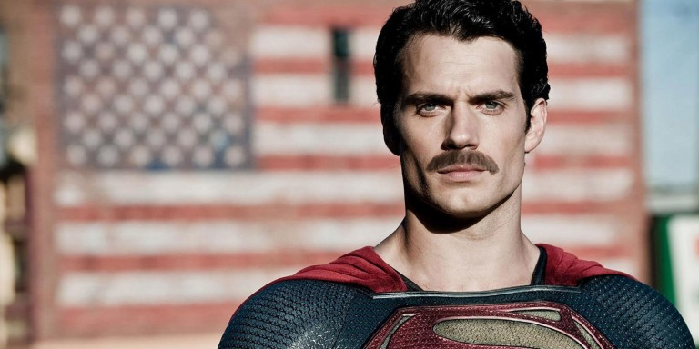

İZLEDİK! Justice League: Tertemiz ve Hayırlı Bir Film, DCCU İçin UMUT Geri Döndü!
DC filmleri, görsel diline ve DC sevgisine gönülden inandığımız ama DC’yi kendi yorumu ile aktaran Zack “Adamı-Öldürse-Cool-Olur” Snyder yönetiminde tartışmalı, bölücü, utandırıcı filmlere imza atarak ilerliyordu. DC’nin “Kalbi olan” ilk filmi Wonder Woman bir nebze umut vermişti ama, başka bir yönetmenin işiydi. Justice League’e yarısından sonra Joss “Herkes-Şakalar-Yapsın” Whedon dahil olmuştu.Justice League öngösterimine “Yine sevdiğimiz kahramanları nasıl rezil edecekler, gömmekten yorulacağız” endişesi ile girdim. Zannedilenin aksine, ben güzel filmler, güzel diziler izlemek istiyorum, gömmek tercihim değil! Justice League tarafında çizgiromandaki özünden kopuk, Zack Snyder’ın Murderverse kurallarına göre hareket eden, kendi kendisinin parodisi bir ekip uzaylı mı dövecekti? Yoksa Whedon imzasıyla tırto şakalar yapıp, çocuklar coşsun diye 9gag mizahı mı yapılacaktı? Ya da bu ikisinin korkunç bir kombinasyonu mu olacaktı?

Pek çok açıdan, Justice League, DC sinema evreninin ikinci filmi gibi. Wonder Woman: The First Adaletbaz ile başlayan ton ve ruh, Justice League ile devam ediyor. Film Man of Steel ve Batman v. Superman’da olan olayları reddetmiyor, ancak yer yer belli repliklerle özür diliyor, yer yer o filmlerde öğrendiklerimizin tam tersi hareketler ve kararlar alarak, üzerini çiziyor. Hatta bazı sahnelerde “Yahu her şeyi de açıklamayalım, bunu bilen bilsin” dedikleri, DC dünyasını çizgiroman, çizgifilm, oyun ya da dizilerinden bilenlerin hiç şaşırmayacağı ama ilk izleyenleri şaşırtabilecek detaylar var. Adeta 3 filmdir alınamayan yolu, almaktan vaz geçmişler ve seyirciye “Abim sen bana güveniyor musun? Gel, coşucaz seninle” diyerek hızla olaya girişmişler.
Filmde eğlenceli sahneler de var, ucuz şakalar da var, ancak karakterlerin pişmanlıkları, amaçları, hedefleri, kaygıları da var. İlginç bir şekilde hepsi tadında, ayarında. “Tamam, Snyder draması geliyor” derken Whedon esprisi geliyor. “Öff Whedon mizahı” diyecekken dramatik bir olay oluyor, ve güzel tarafı, film yağ gibi akıyor. “I’m rich” repliği arada kaynıyor, Flash’ın “Ehueh abi ben bilemedim” halleri diğer üyelerle dengeleniyor. Fragmanlardaki kadar tatsız ya da fazla değil hiç bir şey. “Tadında, ayarında” doğru bir tanım.
Filmin tonundaki değişiklik bazen çok keskin. Adeta Warner Bros ofisinde birileri Google’da “KAHRAMAN” diye aratmış, ne olduğunu anlamış ve “kahraman sahneleri” eklenmiş. Aslında bir süperkahraman filminde bizi şaşırtmayacak bu sahneler, Snyder’ın ilk iki filminden sonra şaşırtıcı bile olmuş. İnsanları kurtarırken hiç kimse “Japon aburcuburu yedik challenge” yapmış gibi ekşi suratlı değil. Hatta Flash’ın “ilk kahramanlığı” diyebileceğimiz bir sahne var, benim gibi uyuz bir adamın bile kalbini ısıtıyor.
Aquaman, Flash ve Cyborg film için yeterli ancak devamını da merak ettirecek şekilde tanıtılıyor. Çok detaylara girmeyeceğim. New 52’nin ilk Justice League cildini okuduysanız, biliyorsunuz! :)
Sinema tarihine geçecek bir film değil, Logan, Deadpool gibi farklı bir film de değil. Ancak “formülü belli süperkahraman filmleri” oyununa sonunda DC’nin de girdiği ve rakiplerinden daha ruhu dolu bir işle girdiğini söyleyebilirim.